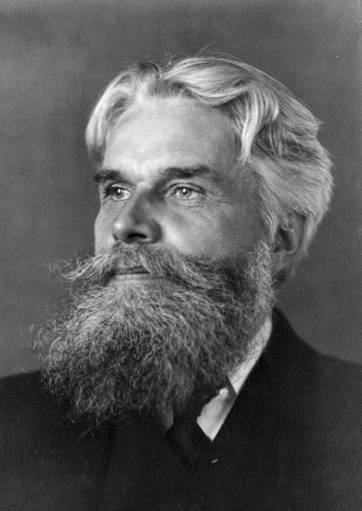
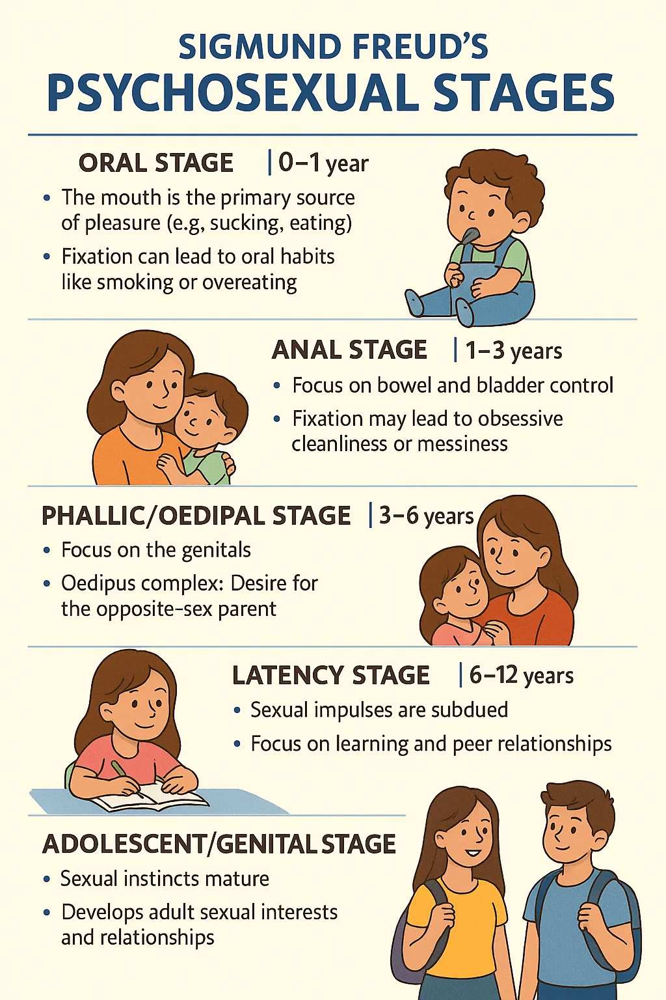

The late 19th century witnessed a radical transformation in the Western understanding of same-sex desire. Emerging medical and psychiatric discourses reconceptualized what had been understood as acts into the defining characteristics of a new human type: "the homosexual."
Michel Foucault identified this moment as marking the "birth" of the modern homosexual, arguing that what had once been understood as the sin of sodomy—a prohibited act that anyone might commit—was transformed into homosexuality, a psychological condition that revealed one's deepest identity.
Even sympathetic voices like Ellis, who advocated for decriminalization, reinforced the notion that homosexuals constituted a distinct category of persons requiring scientific scrutiny and medical management.
Medical Taxonomies and Case Studies
Foucault's History of Sexuality: The Birth of the Homosexual
Theoretical Text | 1976 (English 1978)
Michel Foucault argues in The History of Sexuality, Volume 1 (1978) that sexuality is not a natural category but a historical construct produced by 19th-century medical and psychiatric discourses. His central claim on page 43: the modern "homosexual" did not exist before these expert systems created it. As Foucault famously writes: "The sodomite had been a temporary aberration; the homosexual was now a species" (43). What had been acts anyone might commit became the defining characteristic of a particular type of person.
Foucault traces how medical science transformed sodomy from a forbidden act into homosexuality, a psychological condition embedded in one's entire being. "The nineteenth-century homosexual became a personage, a past, a case history, and a childhood... Nothing that went into his total composition was unaffected by his sexuality" (43). This shift represents a fundamental transformation in power: no longer merely prohibiting acts, but producing and classifying subjects (Part Two: "The Repressive Hypothesis," 17-49). Foucault's analysis provides the theoretical framework for understanding the rupture this archive documents—the moment when "what you do" became "who you are."

Havelock Ellis: Sympathetic Classification
Photograph & Sexological Text | c. 1900
Havelock Ellis's Sexual Inversion aimed to destigmatize same-sex desire by reclassifying it as a congenital "inversion," not a moral failing. Using detailed case studies (Cases I-XXXIV, pages 30-89) and typologies, he presented himself as a scientific authority whose work could objectively explain human sexuality.
Despite his sympathetic intent, Ellis's methodology reinforced the very identity category he sought to normalize. By cataloging physical and psychological traits, he solidified the notion of the "invert" as a distinct type of person (80), defined by an innate, all-pervading characteristic. This created a central paradox: his defense relied on medicalizing homosexuality, thereby completing the historical shift from judging transient acts to diagnosing a fixed identity.

Freud's Psychosexual Development: Identity as Childhood Destiny
Scientific Flowchart | 1905
Sigmund Freud's Three Essays on the Theory of Sexuality fundamentally linked sexuality to the formation of the self. His model of psychosexual development traced adult sexuality—including homosexuality—to childhood experiences and the navigation of the Oedipal complex. He framed same-sex desire not as a sin, but as a divergence in psychosexual development, an "arrest" that shaped one's fundamental identity.
This psychoanalytic approach completed the medicalization of desire. By rooting sexual object choice in early childhood (Essay II, "Infantile Sexuality," 39-72), Freud established sexuality as a deep-seated, identity-defining core shaped by the resolution of the Oedipus complex (Essay III, "The Transformations of Puberty," 73-114). The central question was transformed from an ethical one—"What did you do?"—to a diagnostic one: "What early experiences made you this way?" This solidified the modern concept of the homosexual as a distinct psychological type.
Psychopathia Sexualis
Krafft-Ebing
Case 125 (1893 Edition)
Case 125: Dr. G. - A Case Study of Resistance
Medical Text | 1893 (7th Edition)
In a case from Psychopathia Sexualis, Richard von Krafft-Ebing documents "Case 125" (pages 186-188), describing "Dr. G.," a patient who confidently rejects the label of sickness, citing Plato and describing his same-sex love as a "higher, ideal" form of affection. Krafft-Ebing's response reveals the coercive nature of the new sexological authority: he diagnoses Dr. G.'s very defiance as proof of a deeper pathology, labeling him a "congenitally abnormal" "paranoiac" with an "ethical defect" (188). This case exposes the power struggle at the heart of sexological classification: when medical authority encounters a subject who will not submit to the disease model, the physician must either abandon his framework or pathologize resistance itself. Krafft-Ebing chose the latter.
This encounter exposes the foundational logic of 19th-century sexology. Where ancient thought evaluated the social context of specific acts, Krafft-Ebing's system diagnosed types of people. His elaborate taxonomy, rooted in degeneracy theory, linked homosexuality to hereditary taint and mental illness. The central question was transformed from the ethical "What did this person do?" to the diagnostic "What kind of person is this?" In this power struggle, the subject's refusal to be pathologized was itself used as evidence to complete the diagnosis, cementing the modern concept of the homosexual as a distinct and deviant identity.
The Complete Transformation: From Ancient Acts to Modern Identities
Questions Asked by Victorian Sexologists:
"What kind of person is this?"
"What childhood experiences caused this condition?"
"What are the physical and psychological markers of this type?"
"Is this condition congenital or acquired?"
"Can this identity be cured or managed?"
"To which subcategory of invert does this subject belong?"
Notice the radical shift: Victorian sexologists stopped asking "What did you do?" and started asking "Who are you?" Same-sex desire became not a deed to be evaluated but a condition to be diagnosed, not a temporary act but a permanent identity.
The Complete Transformation
From Acts to Identities: What had been understood as behaviors—sodomy, same-sex acts—became homosexuality, a psychological condition revealing one's essential nature. The homosexual emerged as a "species," a type of person fundamentally different from heterosexuals.
From Sin to Sickness: Moral transgression was reframed as medical pathology. Same-sex desire required not confession but diagnosis; not penance but treatment. Scientific authority replaced religious authority.
The Power of Classification: Medical experts gained authority to define, classify, and control sexuality through elaborate taxonomies. Sexologists like Ellis, Freud, and Krafft-Ebing created systems for identifying types of homosexuals, tracing developmental origins, and prescribing interventions.
Sympathetic Pathologization: Even progressive voices reinforced medicalization. Ellis advocated for decriminalization but still framed homosexuality as congenital abnormality. Freud rejected moral condemnation but located same-sex desire in arrested psychosexual development. Sympathy required accepting the disease model.
Total Colonization of the Self: As Foucault observed, "Nothing that went into [the homosexual's] total composition was unaffected by his sexuality." Every aspect of personality, psychology, and biography became evidence of one's sexual type. Ancient Greeks might have same-sex relations without it defining their identity; modern homosexuals found their entire being saturated by their orientation.